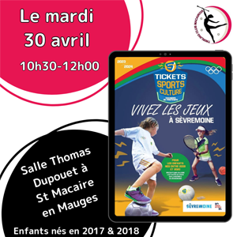

Championnat Nat. Indiv.
13-14/04/2023

Tickets Sport
30/04/24
Champ. Dép. Equipes et Duos
05/05/24
Fête des Fleurs
19-20/05/24

Champ. Reg. Equipes et Duos
25-26/05/24
Champ. Nat. Equipes et Duos
29-30/06/24